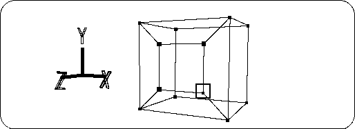

Return to previous page | Return to menu | Go to next page
Drag the "T" key + left mouse button to enclose the points, and select the four points in the figure (Figure 2-12) The selected point turns red. This point is called TAG.

Click the “TAG” button at the bottom right of the screen to switch the operation mode to TAG mode (Figure 2-13).